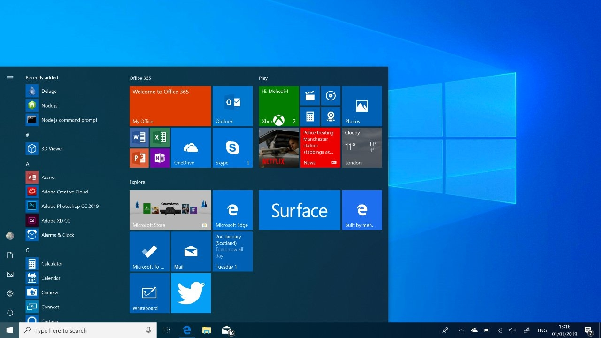
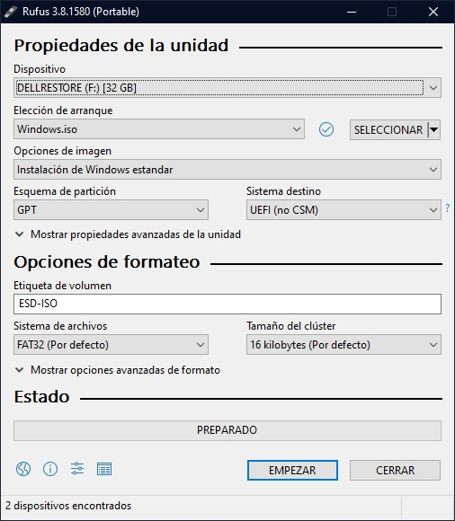
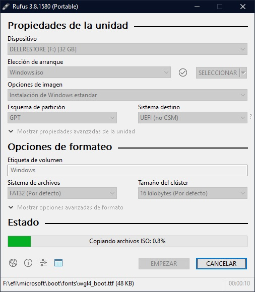
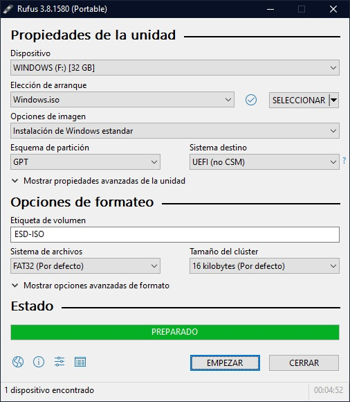
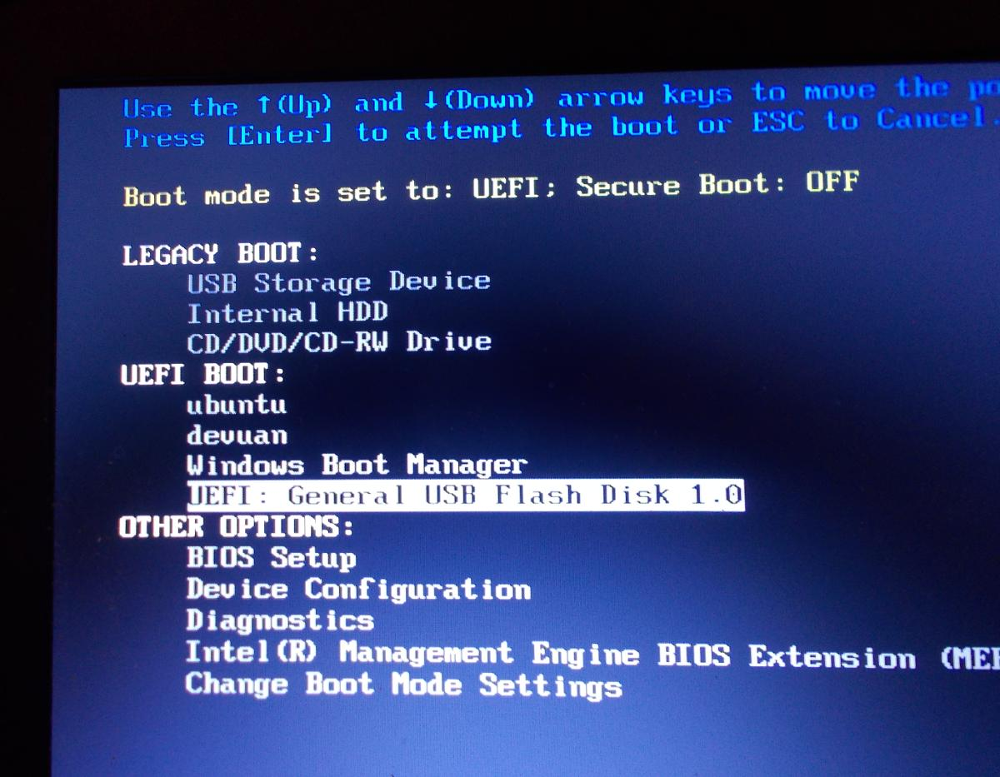

WINDOWS 10
Windows 10 es el vigente sistema operativo desarrollado por Microsoft como parte de la familia de sistemas operativos Windows NT. Fue dado a conocer oficialmente en septiembre de 2014, seguido por una breve presentación de demostración en la conferencia Build 2014. Entró en fase beta de prueba en octubre de 2014 y fue lanzado al público en general el 29 de julio de 2015. Esta edición introdujo una arquitectura de aplicaciones «universales». Desarrolladas con la interfaz Continuum y, posteriormente, con la interfaz Fluent Design, estas aplicaciones pueden ser diseñadas para ejecutarse en todas las familias de productos de Microsoft con un código casi idéntico (incluyendo computadoras personales, tabletas, teléfonos inteligentes, sistemas embebidos, Xbox One, Surface Hub y HoloLens). La interfaz de usuario fue revisada para realizar transiciones entre una interfaz orientada al ratón y una interfaz orientada a la pantalla táctil basadas en dispositivos de entrada disponibles (particularmente en tabletas). Ambas interfaces incluyen un menú Inicio actualizado que comprende un diseño mezclado de Windows 7 con el diseño metro de Windows 8. También se introduce la Vista de Tareas, un sistema de escritorio virtual, el navegador web Microsoft Edge y otras aplicaciones nuevas o actualizadas, un soporte integrado para iniciar sesión a través de huella digital o reconocimiento facial llamado Windows Hello, nuevas características de seguridad para entornos empresariales, DirectX 12 y WDDM 2.0 para mejorar las capacidades gráficas del sistema operativo para los videojuegos.
Caracteristicas Principales
- 1-La interfaz de Windows 10 está concebida para funcionar en aparatos de pantalla táctil, como las de tabletas y teléfonos inteligentes --con las cuales Microsoft está un poco rezagado--, pero también en computadoras clásicas por medio de un ratón y un teclado.
- 2-El "menú de inicio", que antiguamente permitía acceder a la mayoría de las funciones y programas hasta que Windows 8 la borró totalmente, vuelve a aparecer en la esquina inferior izquierda de la pantalla.
- 3-Una nueva función intuitiva, bautizada "Continuum", permite alternar automáticamente de la interfaz clásica a la táctil en los aparatos que son "dos en uno", como la Surface de Microsoft, que funciona a la vez como tableta y como ordenador portátil gracias a un teclado removible.
- 4-"Windows Hello" es un nuevo sistema de autenticación biométrica que se supone permitirá reemplazar las contraseñas. El aparato deberá no obstante ser compatible.
- 5-El asistente virtual Cortana, rival de Siri de Apple y ya integrado en los smartphones, hace su debut en los ordenadores con Windows 10. Cortana utiliza el motor de búsqueda de Microsoft, Bing, para hallar archivos o datos que pueden estar en el disco o en internet.
- 6-Un nuevo navegador más rápido, Edge, reemplazará al Internet Explorer y está concebido para funcionar con Cortana.
- 7-Un panel llamado "Centro de acción" organiza las notificaciones y permite ajustar las configuraciones personales.
- 8-Una nueva aplicación permite transmitir por streaming (difusión en línea) los partidos que se juegan en la consola de videojuegos Xbox, también producida por Microsoft.
- 9-Windows 10 también actualiza su sistema integrado de protección contra los virus, el phishing (ataques por suplantación de identidad) y el malware (programas maliciosos). 
Como instalar Windows 10 en tu equipo
Requisitos:
- Un puerto USB disponible o libre en tu ordenador
- Un USB de al menos 8 GB
- Imagen de Windows 10
- Descargar Rufus, version portable o instalable
Pasos a seguir
Paso 1: Crear memoria booteable con imagen de Windows 10
- Conecta tu USB al ordenador y asegúrate de respaldar cualquier archivo importante en él antes de continuar, puesto que este proceso borrará todos los datos que contenga.
- Ejecuta Rufus (se recomienda descargar la version portable, click aqui para descargar)
- Una vez descargado lo ejecutamos y nos mostrara esta ventana 
- Seleccionamos nuestra memoria USB en la lista que aparece arriba
- Damos click en el boton de Seleccionar donde se nos abrira un seleccionador de archivos, elegiremos la imagen iso del sistema operativo que vamos a bootear
- Si quieres descargar el ISO de Windows 10 usando Rufus haz click en la flecha hacia abajo junto al botón de seleccionar para cambiar a DESCARGA:
- Haz click en el botón DESCARGA y espera unos segundos a que aparezca una nueva ventana para seleccionar sistema operativo:
- Selecciona Windows 10 en este caso y haz click en Continuar. Luego deberás seleccionar le "emisión" o versión de Windows 10. Te recomiendo seleccionar la más reciente (puedes ver las fechas de lanzamiento junto a la versión) para evitar tener que actualizar Windows después. Luego haz click en "Continuar".
- Selecciona la edición de Windows 10, ya sea "Home/Pro" o "Education". Recuerda que esto dependerá del tipo de licencia que tengas. Si tienes dudas, selecciona siempre "Home/Pro" que son las que usan los usuarios individuales. Haz click en "Continuar" para elegir el idioma y luego la arquitectura. Elige x64 salvo que tengas un ordenador demasiado antiguo.
- Finalmente, seleccionar "Descargar" y una carpeta donde
- guardar tu ISO usando el explorador de archivos.
- Si se desea cambiar el nombre al dispositivo, se lo pondremos donde dice etiqueta de volumen, el resto de configuraciones lo dejamos como esta
- Le daremos click a Empezar para que comience el formateo y configuracion de la memoria USB y solo esperamos a que el proceso termine  
Paso 2: Ejecutar Memoria desde la Bios del Equipo
- Para eso Reiniciaremos el equipo y presionaremos la tecla correspondiente para arrancar la bios (generalmente las teclas son F2 F10 o F12) 
- Nos aparacera una pantalla similar a esta, simplemente seleccionamos nuestra memoria usb y le damos Enter
- Aparecera la pantalla negra con el simbolo de windows y eso significa que empezo a cargar el paquete de instalacion
- Luego nos mostrara esta ventana donde nos pedira que seleccionemos el idioma del equipo, asi como el formato de moneda y teclado que utilizaremos
- Le damos click al boton de instalar
- Aceptamos los avisos y terminos de licencia dando click en el check y le damos siguiente
- Nos da a escoger entre dos opciones de instalacion, para hacerlo de la manera mas adecuada, seleccionaremos la Personalizada
- Seleccionamos la unidad que deseamos utilizar para la instalacion del sistema
- Y le damos en Formatear para obtener el formato adecuado para la instalacion del sistema y una vez formateado le damos siguiente
- Comenzara la instalacion de windows, copiara archivos, extraera y empezara a actualizar recursos necesarios para comenzar con su uso, esto tomara unos cuantos minutos y una vwez finalizado se reiniciara la computadora, solo hay que dejar que cargue el sistema operativo y comenzaremos con la configuracion
- Lo primero que nos pedira que elijamos sera la region en la que nos encontramos
- Despues elegiremos la distribucion del teclado que deseamos utilizar, esto se refiere a el tipo de acomodo de teclas que contamos en nuestro teclado
- Nos preguntara si deseamos agregar una distribucion extra, esto a es a eleccion del usuario.
- Posteriormente nos conectaremos a una red de internet para continuar la configuracion
- Podemos iniciar en nuestra sesion de hotmail u outlook o podemos elegir tener una cuenta local
- Puedes ingresar un pin numerico para poder acceder al equipo, o si se desea puede ser alfanumerico (letras y numeros), de no desearse puede omitirse este paso
- Podras elegir en darle autorizacion a microsoft para personalizar aun mejor tu experiencia de usuario
- Si lo deseas, puedes agregar un numero telefonico para enlazarlo a tu cuenta de microsoft, lo que te permite acceder a distintas funciones
- Si accediste con tu cuenta microsoft te preguntara si deseas activar tu cuenta de One Drive, es un almacenamiento en la nube para respaldar archivos de manera automatica, es a eleccion dle usuario
- Finalmente solo queda esperar a que windows termine de configurarse, te mostrara letreros del avance, tarda de 2 a 5 minutos dependiendo del equipo.
- "Lo estamos preparando todo para ti"
- Tarda de 2 a 5 minutos en terminar de configurarse el sistema operativo, es el ultimo paso.
- Finalmente, lo primero que te muestra es Edge, el navegador de windows, para configurarlo a tu gusto.
- Y listo, ya tienes windows 10 configurado en tu equipo
.jpg)
.jpg)
.jpg)
.jpg)
.jpg)
.jpg)
.jpg)
.jpg)
.jpg)
.jpg)
.jpg)
.jpg)
.jpg)
.jpg)
.jpg)
.jpg)
.jpg)
.jpg)
.jpg)
.jpg)
.jpg)
.jpg)